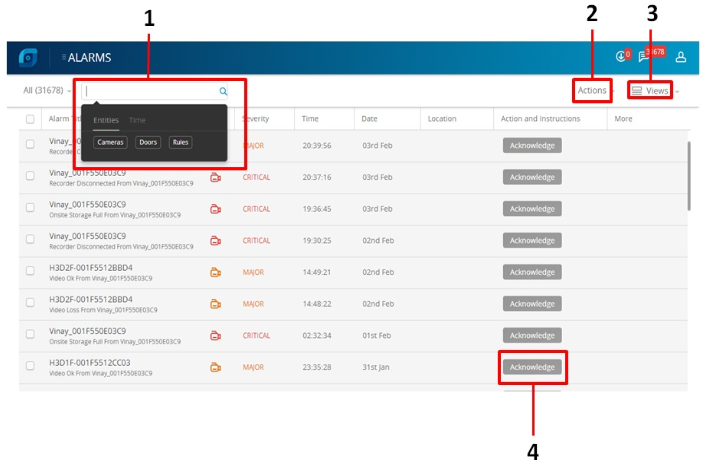

La figura siguiente ilustra la pestaña Alarmas.
En pantalla se visualizan los componentes siguientes.
| N.º | Campo | Descripción |
| 1 | Buscar | Las alarmas notifican a los operadores la ocurrencia de eventos. La opción de búsqueda le permite buscar en la lista de alarmas sobre la base de:<> a. Cámaras<> b. Puertas<> c. Reglas<> d. Hora |
| 2 | Acciones | Le permite ejecutar las siguientes acciones para todas las alarmas que aparezcan en la ventana Alarma. <> a. Confirmar: Reconoce la alarma seleccionada.<> b. Borrar: Borra automáticamente las alarmas cuando son confirmadas.<> c. Congelar transmisión de alarmas: Detiene la recepción de alarmas nuevas o no confirmadas en la ventana Alarma.<> El estado de la alarma después de su activación se denomina 'no confirmada'. |
| 3 | Vistas | Le permite seleccionar las opciones requeridas que aparecerán cuando se visualice la columna. |
| 4 | Confirmar | Le permite confirmar una alarma para aceptar que se va a tomar la acción de respuesta necesaria. |
Anterior Ver en pantalla completa
Siguiente Supervisar y ver alarmas